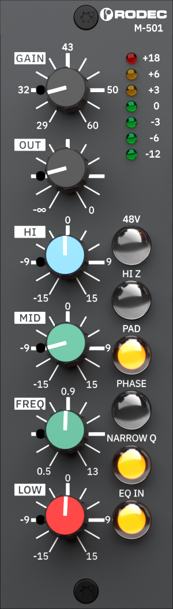

M-501 Mic / Line Preamp
The Rodec M-501 Preamp is a high-performance 500-series module combining a discrete microphone preamp with a versatile EQ section. Designed for premium sound quality and adaptability, it features:
- Discrete Opamps: Customizable pluggable opamps for tailoring the tonal character of the preamp.
- Input and Output Transformers: Ensures warmth, clarity, and musicality in the signal path.
- Bypassable EQ: An equalizer section with selectable Q settings for the parametric midsection, offering precise sound shaping.
- Gain and Controls:
- Up to 70dB of gain for handling a wide range of microphones.
- 48V phantom power, Hi-Z switch, 20dB pad switch, and a phase switch for maximum flexibility.
- Output attenuation control for fine-tuning the output signal.
With its blend of vintage and modern audio capabilities, the M-501 is ideal for both studio and live sound applications.
M-501 Preamp: Features and Controls
Gain Staging Knobs
- Input Gain: Controls the amount of signal amplification at the input stage. Adjust this to set the preamp's primary gain level.
- Output Gain: Fine-tunes the level of the signal sent to the next stage of your audio chain, ensuring optimal levels for recording or mixing.
EQ Section
The EQ section includes dedicated controls for high, low, and parametric mid frequencies:
- High and Low EQ Knobs: Adjust the cut or boost levels for the high and low frequencies.
- EQ HI +/- 15dB @ 10KhZ
- EQ LOW +/- 15dB @ 100Hz
- Parametric Mid EQ:
- Mid Knob: Sets the level of cut or boost for the midrange frequencies.
- EQ MID +/- 15dB @ Chosen Frequency
- Frequency Knob: Selects the specific frequency affected by the midrange adjustment.
- Mid Knob: Sets the level of cut or boost for the midrange frequencies.
- Narrow Q Button: Toggles between two midrange EQ bandwidths:
- Wide Q: Smooth, broader frequency adjustments for natural tonal shaping.
- Narrow Q: More precise and focused adjustments, ideal for addressing problem frequencies or sweet sweeping of the EQ as a performace effect
Control Buttons
The M-501 includes six control buttons to enhance its functionality:
- 48V (Phantom Power): Supplies phantom power for condenser microphones. Engage this button when using microphones that require external power.
- Hi-Z (High Impedance):
- The M-501 preamp offers a versatile tonal palette, especially when engaging the Hi-Z button. With Hi-Z engaged, the preamp delivers a modern, open sound with enhanced top-end detail, reminiscent of today’s transparent preamps—perfect for capturing crisp transients and intricate harmonics. When Hi-Z is disengaged, the M-501 takes on a warmer character, with a noticeable high frequency roll off and low-mid boost that adds richness and weight to the signal, making it ideal for sources that benefit from a more rounded, vintage-inspired tone. The difference between Hi-Z engaged and off is dependent on the source instrument. A vintage 909 may benefit from Hi-Z engaged to make it fresher. A modern synth can sound warmer with Hi-Z off. This flexibility allows users to tailor the preamp’s response to suit different instruments and recording styles.
- Note: While you can plug a guitar or bass directly into the Hi-Z input, the balanced design makes it better to use a passive or active DI box for optimal results.
- Pad (-20dB): Reduces the input gain by 20dB, useful when working with very loud signals to avoid distortion or overloading the input stage.
- Phase: Reverses the signal phase, useful for correcting phase issues when combining multiple microphone signals.
- Narrow Q: Toggles between wide and narrow EQ bandwidths for the parametric midsection.
- EQ ON: Engages the EQ section. When disengaged, the signal bypasses the EQ entirely, preserving the unprocessed preamp tone.
Summary of Use
- Use the gain staging knobs to control input and output levels for clean, precise signal management.
- Engage the EQ ON button to activate the EQ section, and adjust high, low, and mid frequencies as needed for tonal shaping.
- Utilize the Hi-Z setting for vintage synths and drum machines, and enable the 48V button for condenser microphones.
- Employ the Pad and Phase buttons for signal optimization in complex setups.
This combination of features makes the M-501 Preamp a powerful and flexible tool for recording, mixing, and live sound applications.